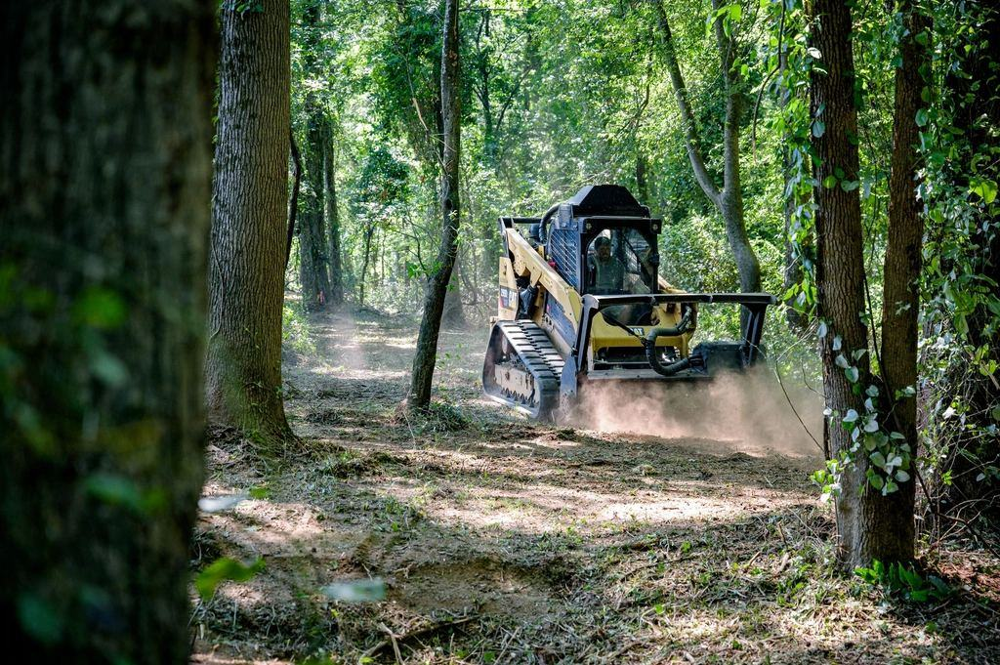

Priser
Tydliga priser utan överraskningar.
Bara plats, eller hela kedjan
Bara platsen
Båt på vagn under tak i ladugården.
fr. 4 400 krper vinter- Portkod dygnet runt från maj
- Underhållsladdning av batteri
- Tvätt före säsong
- Försäkrad förvaring
- Vanligast hos oss
Plats och vagn
Förvaring med komplett vagnservice.
fr. 6 200 krper vinter- Allt i Vinterplats
- Hjullager och bromsar kontrolleras
- Belysning och däck
- Smörjning av koppling och vinsch
Allt på gården
Båt, vagn och motor klara till isen går.
fr. 8 900 krper vinter- Allt i Plats och vagn
- Vinterkonservering av motorn
- Impellerbyte på våren
- Provkörning i tank
Priser inklusive moms för vintern 2026/27, för båtar upp till 23 fot.
Du backar in, vi tar över
- 1

Lämna båten på vagnen
Du backar in på gården. Vi tar över därifrån.
- 2

Kontroll av vagnen
Vi lyfter vagnen, snurrar hjulen och testar bromsar och lampor.
- 3

Åtgärder efter ditt ja
Du får ett sms med pris innan vi byter något som inte var beställt.
- 4

Hämta när isen gått
Kod till porten och båten står klar, vagnen smord och motorn provkörd.
Tar ni båtar som inte står på vagn?
Nej, ladugården är byggd för båtar som står kvar på sin vagn. Det gör att du kan hämta båten själv när du vill.
Hur stora båtar får plats?
Upp till 23 fot och 2,5 meter bredd, med en totalvikt för båt och vagn på högst 3,5 ton.
Vad kostar en vagnservice?
Grundservice från 1 650 kr. Lagerbyte från 1 200 kr per hjul inklusive delar.
Måste jag tvätta båten mellan sjöar?
Det är inte lag, men länsstyrelsen rekommenderar det starkt. Hos oss är tvätten gratis för förvaringskunder.
Kan jag hämta båten på helgen?
Ja, med din portkod kommer du in dygnet runt från 1 maj.
Servar ni bromsade vagnar för tung trafik?
Ja, vi kontrollerar och åtgärdar vagnar upp till 3,5 ton inför besiktning, men själva besiktningen görs av besiktningsföretaget.